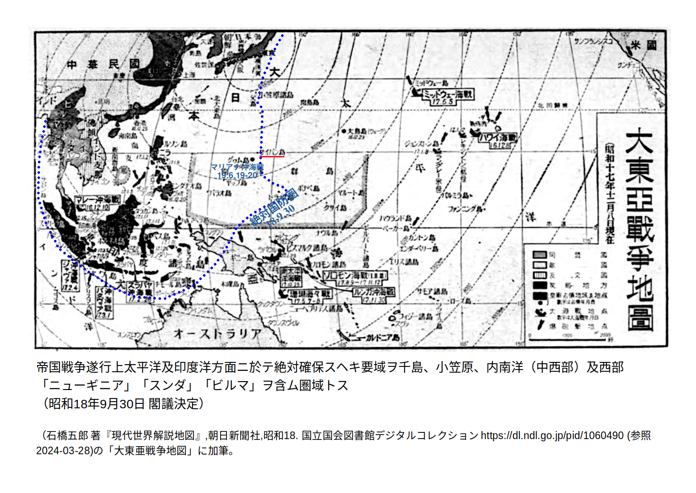
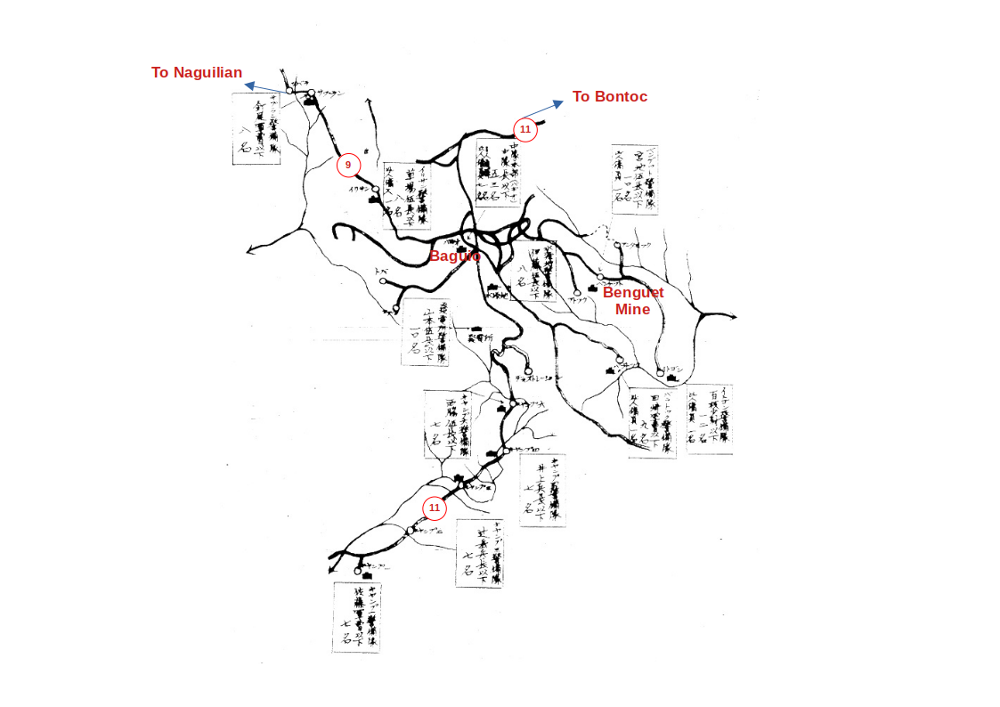
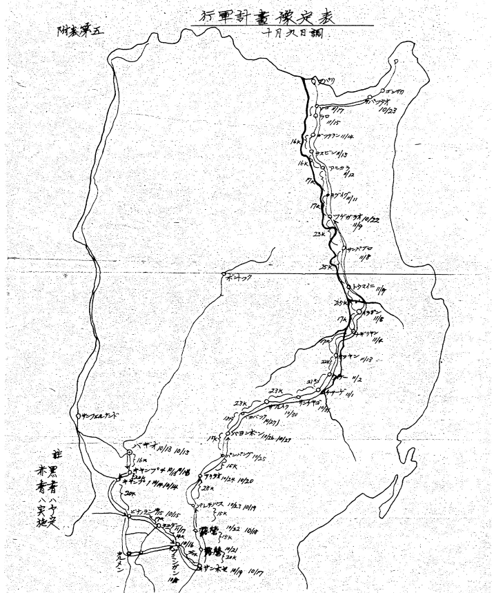

歩兵第179大隊第2中隊(矢野隊)陣中日誌抄¶
戦史や戦後の手記、回想記を読んでも、ルソン島北部の兵士たちの日々の姿がなかなか浮かんでこない。歩兵第179大隊第2中隊(矢野隊)の陣中日誌 [yanodia] は18年12月国内での編成時から20年4月のルソン戦末期近くまでの一中隊の日々が几帳面に書き込まれているので貴重な資料となっている。そこで、戦史などと対比させながらこの日誌を読み込んでみた。
しばしば兵士の個人的な日記類に「陣中日誌」のタイトルがつけられることがある。しかし、本来の陣中日誌は作戦要務令（陣中要務令）で作成が義務付けられ、記すべき内容、書式の定められているものである。戦史の資料とするために作成するものであり、軍事の経験を記録し将来改良の資料となるべきものである。毎月、上位部隊の部隊長の点検を経て、一部は部隊に保管し、一部は大本営（参謀本部）に届けられる。部隊が命令を忠実に実行したこと、物資等を適切に用いたことの証明でもある。したがって、書かれていることすべてを額面通りに受け取ることはできないが、兵士たちの日々の活動を記録したものとして高い価値がある。
ルソン戦関係で陣中日誌をいくつか読み比べてみると、定められたところとはかけはなれて、なぐり書きに近いものや、かなり率直に日々の感慨を記したものなど、さまざまである。そのなかで、矢野隊の日誌はその教科書的な几帳面さ、過不足のなさで群を抜いている。
目次
マニラまで¶
荒木兵団情報記録 昭和十八年十月十四日 バギオ
十四日兵団管内各地ニ於テ行ハレタル比島独立式典ハ極メテ盛大且異常ナル
感激裡ニ無事終了シ・・・・・・・・・・・・・・・・・・・・・・・・・
過去四百年ノ永キニ渉リ如何ナル祭典ニ於テモ必ズ支配国ノ旗ヲ並揚ヲ強制
セラレタル彼等ハ今日始メテ式場中央ノ大国旗掲揚台ニ彼等自身ノ国旗ノミ
ヲ掲ゲ・・・・・・・・・・・・・・・・・・・・・・・・・・・・・・・
兵団ハ十三日以来比島独立前後ニ於ケル特別警戒並ニ果敢ナル粛清討伐ヲ続
行中ナリ
(*「荒木兵団」は第17独立守備隊の通称)
日本の絶対国防圏(昭和18年(1943年)9月)  はフィリピンよりはるかに遠い線に引かれていた。そのため、「フィリピン共和国」擁立当時のフィリピン地上軍(第14軍)の主な任務は治安確保に加えて、この防衛圏を後方でささえる兵站業務と航空作戦基盤造成だった。それら任務において、しかし、第14軍隷下には師団一個(16D) 1 と3つの独立守備隊(各3~5個大隊)の計22~23個大隊があるだけだった。昭和18年11月、陸軍はこれら独立守備隊を拡充して、各6個大隊を基幹とする独立混成旅団3個をつくった。また、新たに1個の独立混成旅団を加えた。すなわち、第30~33独立混成旅団を編成して当座の用にあてることにした。
{kind=link}
昭和18年(1943年)11月16日、独立混成第32旅団独立歩兵第179大隊の臨時編成が下令された。大隊長には一瀬末松中佐が補された。12月3日、長崎で大隊編成が始まった。
同大隊の第2中隊(矢野由成 中尉(当時))は転属、臨時招集等の兵を受領して、12月9日に人員176名の編成を完結し、長崎県大村に屯営する。以下、 矢野隊 と呼ぶ。南方派遣に向けて各種予防注射、熱帯病予防の講義等を受ける。19年1-3月は教育、訓練にあけた。隊員は通常の教練に加えて、下記のような訓練、学科講義を受けた。
19年2月21日 「漂水時に於ける動作」*、「ジャングル地帯通過演習」
2月25日 学科「フィリッピンの現状」に就て(第一回)
2月29日 学科「要図」の書き方及「軍隊符号」に就て
3月7日 大野原廠宿に転営開始
(* 以降、度々、漂水訓練あり)
3月中はほとんど大野原-嬉野間の道路工事に従事していたが、いよいよ4月半ば門司港から出発する。
4月9日 輸指作命第一号
大隊は明後十一日夜半柀杵駅発列車に依り門司港に向い輸送せらる
12日 2100 乗船 (第八○ 四丸）)
14日0時 某市に向い出帆 兵器装具を整備し警備服装を完全になし万全を期する
如く準備を為す
15日 晴天 鎮海湾要港に碇泊
16日 晴天 鎮海湾要港出帆
19日 晴天 揚子江に着 投錨
21日 晴天 揚子江出帆
輸送指揮官注意 （一）愈々最近敵潜蠢動せる海面に突入せるに方
各将兵は一層沈着して対潜対空監視に奮励努力せよ （ニ）救命胴
衣は直ちに装着し得る如く・・・
24日0810 対潜水艦警報あり
25日 晴天 危険海域航行中
26日 退船準備 マラリヤ予防薬内服薬の服用を実施す
27日 晴天 1900 コレヒドール島通過マニラ湾に入る
2300 マニラ港に入港
28日 晴天 1200 中隊主力上陸 1700 マニラ兵站第二宿舎に入る
中隊現員 176名

「第八○ 四丸」のルート概要。仲原善徳の昭和16年紀行図 [nakahara16] に記入。¶
「第八○ 四丸」は船名ではなく、陸軍の船番号か。日程、航路からして、船はマニラ行きの「モタ17船団」の輸送船5隻のひとつである。同船団は揚子江入口の泗礁山(Raffles Island)に寄り、「竹一船団」と一緒になった [AJSU] 。竹一船団はニューギニア方面にむかう2個師団他をのせていた。あわせて護衛艦12隻、輸送船15隻の大船団となった。26日、竹一船団の第一吉田丸がルソン島ラボック湾(Lapog Bay)北西200Km付近海面で米潜水艦の攻撃を受け沈没した。これらのことはどこまで船内の部隊に伝わったのか、矢野隊日誌にはまったく記載がない。(竹一船団は5月1日マニラからニューギニアへ向かい、6日に3隻が潜水艦の雷撃により沈没するという大きな被害を出した。)
ほぼ一ヶ月後、山本七平の所属する砲兵部隊は門司からマニラへの輸送船に乗る [sitihei51] 。ほとんど横にもなれない混雑状態だったという。5月29日乗船、6月15日マニラ下船なので、航海日数は矢野隊とほぼ同じである。輸送船内の混雑、息苦しさは、4月16日マニラ下船の梅崎光生(独立歩兵第180大隊)も回想のなかに記している [mitsuo62] 。しかし、矢野隊の陣中日誌では航海中も坦々と学科、教練等の日課がこなされたことになっている 2 。
独立混成第32旅団¶
4月29日 晴天 マニラ第二兵站宿舎
天長節拝賀式
天長節に際して部隊長訓話要旨 四月二十九日 九、三○
マニラ兵站司令部雨天体操場
一、航行中敵潜水艦攻撃に対し御陵威の御加護と各員の努力に依り仼地第
一歩を踏み得たことを衷心より喜ぶ 目的地に出発するま迄特に将兵
以下下船中の疲労を速かに回復する様至厳なる軍規風紀の下に言動共
に活発言行共上品なることを要望す
中隊長訓話要旨
一、和楽の間鉄石の団結を計ること
ニ、大東亜十億の盟主たる覚悟を以て比島人に対すること
・・・
5月2日 晴天 マニラ市 兵站宿舎
荒木旅団長閲兵
荒木旅団長閲兵後訓示要旨
精鋭無比なる九州男児の吾が旅団に在ることは旅団の戦力を強大したる
ことなり今後幾多の困難が待ち受けて居る労苦を察して余りある・・・
(1) 比島人は他の満州支那の住民と異る処多し比島人の吾に付くか付か
ざるかは戦闘に重大なる役割を持つものなり故に慎重に行動をなすこと
・・・
独立混成第32旅団長は
同旅団は、フィリピンにあった３個の守備隊をもとに昭和18年11月に作られた3個独立混成旅団の一つである 4 。荒木少将は以前は北部ルソン一帯において「匪賊」討伐を主任務とする第17独立守備隊(通称、荒木兵団)を率いていた。当時、匪賊といっても、盗賊山賊なみから米比軍ゲリラまでさまざまだった。守備隊の装備は貧弱 [17uzawa] で、ゲリラのそれがもっとお粗末だったので何とかなったという程度のものだった。荒木兵団は匪賊討伐のかたわら、イルカノ(イロカノ)族やイスネグ族などの文化を表面的ながらも調査し、報告書にまとめている。
「独立混成旅団」はいわば師団の縮小簡略型である。第32旅団の下には第175-180の6個の歩兵大隊が入った。第179(一瀬大隊)、180(有薗大隊)の2大隊は九州で新たに編成された。そのほかの4個大隊はすでにフィリピンにあった部隊を改編・補充したものである 5 。
5月3日 晴天 マニラ市 兵站宿舎
二回に分け「マニラ市」に外出を許可せらる
5月5日 晴天 マニラ市 兵站宿舎
駿60作命第三号要旨 5月5日16、00 マニラ市
（一）大隊は五月八日0705 マニラ発列車に依りて「カバナツアン」
に向ひ輸送せらる
・・・
5月7日 晴天 マニラ市 兵站宿舎
08、00 学科「比島及比島人」に就て 百枝少尉
09、00 佐藤少尉
10、00 齊藤中尉
5月8日 1635 マニラ駅発 2225 カバナツアン駅着 下車 2235 宿舎着
駿60作命第5号「ボンガボン」警備命令要旨 5月8日 カバナツアン
（一）・・・旅団は敵の上陸企図に備へ六月来を目途とし担任地区内の
主要沿岸に陣地を構築す
（ニ）大隊は・・・「ボンガボン」地区警備隊となり速かに新配備に就き
先つ作戦道路次で陣地構築並に担任地区の警備に任ぜんとす
（三）第二中隊は九日「カバナツアン」出発「サウミル」南方地区に至
り「バレル」道の道路作業並に附近の警備に任ずべし・・・
中隊現員 175名
5月9日 晴天 カバナツアン
兵器受領内訳左の如し
三八式歩兵銃 98
押収小銃 40
八九式重擲弾筒 8
九六式機関銃 2
十一年式軽機関銃 6
九三式双眼鏡 7
九三式五○ 種双眼鏡1
{kind=link}
カバナツアン(Cabanatuan)は広い水田地帯の中心である。マニラからアパリまで縦貫する5号道上、マニラとサンホセとの中間に位置し、マニラからの鉄道終点でもある要衝だった。ボンガボン(Bongabong)は、カバナツアンから島東側のベーラー湾(Baler Bay)に行く山道、Cabanatuan-Baler Trail(バレル道)の途中にある。フィリピン最大の俘虜収容所はカバナツアンの東8キロのところにあった。カバナツアンには兵站病院もあった。
矢野隊と入れ替えのように、兵站指定慰安所の主が「家事都合」により、妻と5歳の息子と従業員6名(20~22歳)を連れての帰国を申請する出来事があった。申請が認められたとして、当時の状況でみな無事に帰りつけたろうか。従業員たちはマニラあたりで留められたりはしなかったろうか。すでに、「1944年半ばから同年末にかけての日本帰還者は僅かに約600名」 [sasaki12] という状況にあった。
{kind=link}
以降、矢野隊はルソン北部(地誌 )にとどまることになる。
5~6月、矢野隊はバレル道のボンガボンより先、山中のまがりくねった道の補修作業を課せられる。この二ヶ月は豪雨の日が多かった。雨が降ると山道は崩壊した。一日数kmの補修・補強工事に、兵は交代で十数名、フィリピン人夫二十名ほどであたっている。また、道路要所の警備や陣地構築を行う。ときにゲリラ討伐に出るが、これといった成果はない。概して治安良好であり、住民は少なくとも表向きは協力的である。
6月 4日 晴後雨 ケソン荘
中隊長 宣撫「日比協力・人夫の健康に対する皇軍の配慮及処置」
に就て人夫全員集合の上宣撫す
6月21日 晴後雨 ボンガボン
中隊長「カバナツアン」兵站病院に入院患者状況視察及事務連絡の
為出張即日帰隊
6月28日 曇後雨 ボンガボン
昨27日2300カブクボカン警護団員は同部落附近を彷徨する匪を発見
直に「リザール」警護隊に報告せり
・・・
今年に入り最初の事にして人心動揺せりと言ふ
作業のきびしさに加えて悪天候のせいもあったか、病人がふえ、7月初時点で矢野隊のほぼ一割がカバナツアン兵站病院に入院していた。うち、一名は退院できないまま7月中旬に病死する。
第103師団の編成¶
7月に入ると、第2中隊は旅団司令部のある バギオ に移動し、同市周辺の警備にあたることになる。
7月3日 晴天 「ボンガボン」より「カバナツアン」
7月4日 晴後小雨 「カバナツアン」より「バギオ」
0700 自動貨車九車両に分乗し「カバナツアン」宿営地出発
1700 バギオ市着 直ちに「西兵舎」に入る
中隊現員 141名
7月5日 晴後雨 バギオ市 西兵舎
（中隊は）植山隊警備地を申継ぎ「バギオ」地区警備並に情報収集に
任せんとす
7月6日 晴時々曇 バギオ市 西兵舎
0800 大隊長（第175大隊）来隊
0830 大隊長に申告 後新任務に就ての訓話後帰隊さる
比人傭員 11名 及 通訳 3名 受領す
内 7名は外泊及逃亡中に付
中隊現員 141名（「入室一」） 傭員 7名
バギオに着くなり、いるはずの現地傭員の多くが名ばかりで、実は存在しないことを知る。中隊に通訳は1名しかいない。
7月6日に第175大隊長（山下末吉少佐）が訪れたのは、矢野隊が一時的に一瀬大隊を離れることを意味する。山下部隊長はもともと守備隊時代の荒木兵団にいて、対ゲリラ警備に経験があった。
昭和19年7月頃、米軍人の組織したフィリピン・ゲリラ軍には、潜水艦やヨットで届けられた無線通信機が行き渡ってくる。これによって連合国南西太平洋地域総司令部(SWPA: South West Pacific Area)と密に連絡をとり、その動きは組織化されていく。
駿参乙（情）第一号
情報記録 昭和十九年七月十一日 バギオ
・・・
呂宋島全域に於ける敵側無線局の現出並に之が米濠方面との交信状況は依然
活発にして最近特に小型無線機を多数搬入し島内連絡に使用しあり
(出典：「ツゲガラオ憲兵分隊 情報綴」 昭１９．７．３～１９．１２．３)
第2中隊の日誌では明示的に読めないが、7月初、独立混成第32旅団司令部を改編して、 第103師団 司令部（師団長 村岡豊 中将）ができた。旅団略称「 駿 」は第103師団に受け継がれた。4月にそれまでルソン防衛の中核だった第16師団をレイテ島に移してしまい、日本軍はルソンの防衛強化を急がなければならなかった。その一環としての再編である。荒木少将は歩兵第79旅団長として第103師団の下に入った。荒木旅団はバギオ北西の港町、北サンフェルナンド(San Fernando)に司令部を置き、主に北西海岸沿いの守備を担った。
7月10日に第103師団編成は一応完結した。といっても、まだルソンにとどいていない部隊もあり、師団の形が整うのは10月以降になる。師団の任務はルソン島北地区の守備とともに、米軍の同地区への来攻に備えることである。アパリは米軍に抑えられれば沖縄ー本土空襲の足がかりとなると考えられ 6 、また、ツゲガラオ付近は糧秣補給源としてたのむカガヤン河谷防衛の要所であることから、ルソン島最北部東側に半個ないし一個師団を配備することが決まっていた。
後(20年5月)に駿兵団主力が アパリ地区から南下転進 したとき、湯口旅団に雑多な部隊を併せて師団がまだそこにあるかのごとく装った。しかし、実は駿兵団ほかの100番台の急造師団そのものが、師団をよそおった守備隊とでも言うべき貧相な集団だった。火砲も輸送力も「極めて簡易」、「素質充分ならざる補充兵多く」、作業器具も「現地急造の円匙」くらいであり [junbi44] 、「老朽幹部」もおり [gaiyou30] と評されるありさまだった 7 。
第103師団(通称「駿」)は歩兵第79旅団(荒木旅団)と歩兵第80旅団(湯口旅団)の二旅団を有した。一瀬大隊(第179大隊)は湯口旅団の下に入った。そして、北サンフェルナンド〜バギオに拠った荒木旅団をのぞいて、駿兵団は最北のアパリ付近に順次集結となったので、バギオ守備に組み込まれていた矢野隊は一時的に一瀬大隊を離れることになった。
湯口旅団司令部が7月10日にツゲガラオに置かれる。第177大隊(坂巻大隊)もツゲガラオに本部をおき、東警備地区隊として、対ゲリラ警備を主任務とする。一瀬大隊も少し遅れてアパリ方面に移動したものと考えられる。8月以降、人事等で矢野隊に本属からの指示があるときは電信で届く。
7月12日 曇後雨 バギオ市 西兵舎
バギオ露命第一号要旨
七月十二日1430より司令部及在バギオ隷下指揮下各部隊将校の伺候式を実施す
7月13日 雨天 バギオ市 西兵舎
武部兵長以下四名 師団長（護衛）警乗として「マニラ」市に出発す
7月16日 曇後雨 バギオ市 西兵舎
部隊長（一ﾉ瀬大隊長）来隊巡視後「時局と軍人としての覚悟」
に就て訓示
7月17日 曇後雨 バギオ 西兵舎
1510 師団長巡視為来隊
そうめったにない師団長巡視は、通常の軍服に略授佩用で受けるよう指示があった。巡視は15分で終わった。
バギオ警備¶
7月18日、サイパン島守備部隊が玉砕した。「絶対国防圏 の要衝」サイパンがあっけなく落ちた、そして本土のほぼ全域が空襲域に入った。この衝撃はルソン島の将兵たちにとってもきわめて大きかった。
7月27日 雨天 バギオ 西兵舎
傭入 通訳 岩間重之
駿10641部隊より転入 中隊本部に勤務すべし
この前日に唯一の通訳を含む二名のフィリピン人傭員が逃亡した。そのため、翌日、山下部隊から矢野隊に日本人通訳一人をまわしてもらったものである。軍傭員、警察などフィリピン人が日本軍の周囲から引いていく。
7月末〜8月、日本軍は作戦方針を大転換した。元来フィリピンは単なる兵站基地でしかなく、同地の陸軍も守備隊程度の実力しかなかったものが、行きがかりで決戦を担うことになってしまった。
比島に於ける作戦は単なる防衛に非ずして **決戦** なるの主旨を明確ならしめたり
(中略)
比島に於ては国軍の決戦を遂行す 決戦の主体は陸海の航空軍及艦隊とし空海決戦は
中南比に求む
地上軍の決戦は『ルソン』島に求め中南比に於ては空、海決戦に全面協力す
(「比島に於ける第十四方面軍の作戦準備」、昭和21年10月、第一復員局)
同方針に基づき、ルソンでは島内の軍需品集積を計画した。例えば、バギオ地区においては一個師団一会戦分の兵器弾薬、また、糧秣及び燃料を一ヶ月分集積するものとした。海上の補給線が途絶えつつあった状態で、この程度の備蓄でも達成は容易ではなかった。
8月13日 雨後曇 バギオ 西兵舎
駿作命丁第36号 第103師命令 八、一三 0900 バギオ市
1. 師団経理部長は八月十五日以降野戦倉庫付属建物並に「ベンゲット」
鉱山鉱坑内に糧秣燃料を分散集積すべし
2. 総軍自動車廠「バギオ」出張所長は八月十五日以降自動車用燃料を
「ベンゲット」鉱山鉱坑内に集積すべし
・・・
ベンゲット(Benguet)鉱山はバギオ東方5kmほどのところにあった。師団はこれら2箇所の集積所の警戒を矢野隊の任務に加えた。わずか1個中隊でこれだけの範囲の警備を担当したのである。
{kind=link}
8月23日 晴後曇 バギオ市 西兵舎
矢日命第四十号 要旨
現時局逼迫の件と中地区内匪状悪化の傾向顕著なるに鑑み各警備隊
は警備を厳にし特に夜間勤務の厳正なる服務を実施すべし
中隊現員 150名 通訳 1名 傭員 4名
中隊本部 48名 通訳 1名 傭員 2名
警備隊 102名 傭員 2名
8月28日 晴後雨 バギオ市 西兵舎
「イトゴン」警備隊百枚少尉以下三名及中隊本部より出張中の小川伍長
以下二名「キャンプ1」へ情報蒐集に行動し更に家屋下より「ダイナマイ
ト」10本「雷管」73本「導火線」50米を発見押収し犯人捜索中
9月2日 曇 バギオ市 西兵舎
「イトゴン」警備隊藤戸兵長以下三名「イトゴン」会社坑内重要施設を
自九月一日 1700 至九月二日0800 の間に爆破されたりとの報により原因
探索の為行動す
9月3日 曇後雨 バギオ市 西兵舎
・・・
「イトゴン」警備隊百枝少尉以下三名「イトゴン」町に於て日本語教育
を実施す
「バラトック」警備隊田崎軍曹以下三名「バラトック」及「アコパン」
に於て部落民懇談会を実施す
昭和19年8月以降、矢野隊では日本語教育、部落民懇談会といった宣撫活動がふえる。フィリピンに来て日も浅く、現地事情も分からず、通訳も一人きり、現地傭員も逃げていくなかで、中隊幹部は部落をまわってはこれらの活動を行っている。
この頃、第103師団が各地で対ゲリラ警備にさいていた人員の多くを、作戦任務に切り替えるとの方針が決まった。これによって奥地分屯隊を撤収せざるを得ないなど、必然的に警備は手薄となり、ゲリラがますます跳梁することになる。が、比島決戦準備のためにやむを得ないとされた。
9月1日 晴後曇 バギオ市 西兵舎
1500 旅団長閣下中隊視察の為来隊 中隊長警備概要口頭報告後
1630帰隊さる
9月6日 晴後雨 バギオ市 西兵舎
1330 「イリサン」警備隊よりの「マースマン」倉庫襲撃さるとの報に
依り齊藤中尉以下七名1405出発現場に急行し探索するも匪団発見するを
得ず
駿参乙（情）第七号
駿兵団情報記録 昭和十九年九月九日 バギオ
第一要旨
・・・
四、・・・管内敗匪は益々其組織統一化を計り警備分屯隊の僻地撤収を楔機と
し逐次集結しあるものの如く其の遊撃行動は漸次作戦行動的色彩を呈しあ
りて・・・
「敗匪」、「匪団」と呼んでいるのは、米比軍ゲリラ組織のひとつ、ルソン北部山岳地帯を中心に活動していたUSAFIP-NLである。(フィリピンには様々な系統の米比軍ゲリラ組織があった [macch10] 。)米比軍ゲリラは初期は日本軍部隊に戦闘をしかけては、手ひどく掃討された。その後、この時期までは可能なかぎり日本軍との戦闘は避け、情報収集、妨害工作、住民への宣伝、対日協力者排除といった活動に集中していた。その行動様式にはっきりと変化が見え始めた。
9月15日、矢野中隊長は大尉に任ぜられた。翌日、西地区警備隊に対してゲリラ討伐命令が下った。討伐活動は、第一期9月18日から、第ニ期9月26日から、各一週間として定められた。しかし、9月18日を過ぎても特に行動を起こす気配はなく、21日になって命令が変更された。
9月21、22日、米軍によるマニラ空襲があった。フィリピン政府(ラウレル大統領)は23日に米英に宣戦を布告した。これにより都市部では預金引出しや食料物資買いだめなどの騒ぎが起きていた。また、米比軍ゲリラの活動も表面化してくる。これまでは控えていた警備隊への襲撃なども散発するようになる。9月下旬には北部ルソンでゲリラの一斉蜂起があるとの情報もあった。
9月21日 曇天 バギオ市 西兵舎
駿集大作命甲第一六号要旨
・・・討伐計画を変更
矢野隊は第二期の開始を待つことなく直に討伐を実施すべし区域を
十四粁ー1036高地（「カパンガン」東方約六粁）ー「ビンマカ」山
（1787「キブンガン」西々南方六粁)以西州境に亙る間とし特に「
カパンガン」周辺及州境地区より徹底的に掃蕩すると共に「ナギリ
ヤン」道以北の「ナギリヤン」河上流河谷地区の潜伏匪団の摘発を
行ふべし
本討伐期間を九月二十一日より十月二日迄と予定す
駿集大作命とは、駿兵団集成大隊作戦命令を意味する。駿集大作命は8月に入ってから日誌に出現するので、この頃までに荒木旅団の山下大隊主力もバギオを離れ、バギオ周辺の守備は集成大隊を作って対応していたものか。集成大隊長は中地区警備隊長伊藤大尉である。
矢野隊はただちに齊藤禎蔵中尉以下、将校2、下士官4、兵30、臨時通訳2、傭人2の40名、5班編成の討伐隊を組織した。装備は軽機関銃2、擲弾筒2、小銃28、手榴弾各人1発である。 バギオ北西の町、サブラン(Sablan) から出発し山中密林を約十日の行程だった。
9月23日 霧・雨 バギオ市 西兵舎
0830 齊藤討伐隊齊藤中尉以下四○ 名「サブラン」に向い出発
9月24日 雨後曇 バギオ市 西兵舎
自1300 中隊長以下三名 討伐隊情報聴取の為「サブラン」警備隊及
附近部落に行動す
討伐隊
1340 渡河地点(ナギリヤン河河谷上流渡河点)
吉岡斥候長以下四名渡河点捜索中対岸より敵匪約十五名(匪首
不明)射撃し来り陸軍上等兵大坪XX「前頭部後頭部穿透性貫通
銃創」を受け1400戦死
斥候隊及到着せる本隊直ちに応戦 1405 匪団退却す
本隊は機を失せず追撃したるも捕捉するに至らす
彼我の損害
彼 遺捨死体三、鹵獲物件 星条旗一、拳銃弾六、小銃弾薬ニ一
我 戦死一（兵）、小銃弾ニ八、軽機弾五一、擲弾筒弾五
(* XX 略す)
数日来の豪雨によって河が増水していた。討伐隊は本来の渡河点を見失った。河岸の道は狭く、両岸は密林に覆われた急斜面で見通しが悪い。大坪上等兵は斥候長に命じられて渡河点を探した。やっと適当なところを見つけて、先に渡ってみようとしたところを、いきなり集中射撃を受けた。
遭遇したのはイゴロット族の匪賊の少集団で、指揮系統は不明だったが星条旗を持っていた。「戦死一（兵）」が損耗した弾丸の数と同列に書かれているのは、帝国陸軍を象徴しているようで、痛ましい。
齊藤討伐隊は10月2日帰隊した。
10月2日 晴天 バギオ市 西兵舎
駿集大作命甲第18号要旨 10月2日 ボントック
（一）匪団は各隊の連続討伐に拘はらず未だ大なる損害を受けずして
各地に蠢動しあり
・・・
10月3日 曇天 バギオ市 西兵舎
駿45集露命甲第15号要旨 10月3日 バギオ
（一）在バギオ部隊兵力の僅少下に伴ひ「バギオ周辺」の状況逐次
悪化の徴あり 現在判明せる状況左の如し
(1) 在「バギオ」比人警察所員及生徒逃亡し「ツリンダット」
北方山地に於て兵匪と合流せるものの如し
・・・
バギオ周辺がゲリラの活発化でますます緊迫するなか、10月6日、集成大隊の編成を解き、警備任務を独立歩兵第357大隊(粂部隊)に引き継ぐよう指示が出た 8 。矢野隊も移動のための準備が下命された。矢野隊の本属(一瀬大隊)復帰が決まったのである。
アパリ地区の陣地構築¶
10月6日、山下奉文大将が比島陸軍を率いる第14方面軍司令官としてマニラに着任した。
呂宋地区
比島作戦の地上主戦場として之に方面軍の決戦戦力を集中し呂宋攻略を企図
して来攻する敵戦力を撃滅す
（「第１４方面軍比島作戦計画大綱」より）
10月11日午後、 アパリの海岸飛行場 が米艦載機61機により、およそ30分間にわたり銃爆撃を受けた。これを皮切りに、しばらく、アパリや北西海岸ラオアグ付近への空襲がくりかえされるようになる。いずれもレイテ島および台湾を攻撃するにあたっての米軍の作戦の一部である。
10月12日から15日、台湾沖航空戦。17日、レイテ湾の小島スルアン(Suluan)島の海軍監視隊から同島に米軍上陸との電信。18日、フィリピン各地に米機襲来。19日、南方軍は捷一号決戦(比島方面防衛決戦)命令を下達。20日にはレイテ島に米軍が上陸した。しかし、陣中日誌の性格上、これらの出来事には一言も触れられていない 9 。大岡昇平「レイテ戦記」ではフィリピンの陸軍各隊では、17日に台湾沖航空戦大勝利（誤報）の祝賀会が開かれたと記されているが、弾薬受領や兵器輸送に携わっていた第103師団兵士たちにはほとんど関係のない出来事だったように見える。
敵夷遂ニ比島ニ迫リ敢テ帝国ノ死命ヲ扼セントス 即チ至上震怒シ給ヒ茲ニ
国軍決戦ヲ発動セラル
捷号決戦発動ニ際シ与フル訓示
寺内南方軍総司令官
昭和19年10月19日
その少し前、13日、矢野隊は「バギオ」を出発、 いったん南下してサンホセから5号道を北上する。目的地はルソン島最北部のアパリ地区である。行軍、露営、自動車に便乗したりして、20日に バレテ峠 を越える。同時期、バギオからはバレテ峠手前になるサンホセに師団兵器、弾薬が集積されていた。矢野隊はその警備にあたったり、兵器輸送の自動貨車に便乗したりしている。第103師団がやっと師団としての体裁を、見かけ上としても仕あげる段階に来た。9-10月には、師団野戦病院、病馬廠、防疫給水部の各部隊も次々にルソンに着いていた。
バギオ周辺での気の抜けない警備任務を解かれて、自動貨車やときには戦車の上に乗せてもらい、5号道を走り抜けていくとき、矢野隊の兵士たちはどんな感慨をもったろうか。日誌に添えられているこのときの矢野隊行軍図  には、なにか解放感に似たものが感じ取られるのである。
{kind=link}
10月20日 晴天 自バレテパス 至アリタオ
0700 「バレテパス」出発 途中五粁にて第二小隊六粁にて指揮班
第一小隊の順に便乗す
1400 「アリタオ」着 「アリタオ」に於て宿営
10月21日 晴天 自アリタオ 至バヨンボン
0630 「アリタオ」出発 指揮班及第一小隊一ヶ分隊戦車隊の貨車・
戦車に便乗 四粁より残余自動貨車に便乗す
1530 「バヨンボン」着 「バヨンボン」兵站宿舎に於て宿泊す
10月22日 晴天 自バヨンボン 至ツゲガラオ
0630 「バヨンボン」出発 師団兵器輸送の自動貨車に便乗
2130 「ツゲガラオ」到着 師団経理室に宿営す
10月23日 晴天 自ツゲガラオ 至マルセリオ
0700 「ツゲガラオ」発 自動車便に依り
1400 「パッタオ」第179大隊本部に到着
1430 大隊長・申告及訓示を受く 「パッタオ」に宿営
・・・
中隊現員 110名
指揮班 21名 第一小隊 45名 第二小隊 44名
(後発 第三小隊 45名)
10月24日 0700 「パッタオ」大隊本部前出発
0800 「マルセリオ」到着
一瀬大隊本部のあったパッタオ(Pattao)は、アパリに向けて5号道路を北上の途中、ドゴ(Dugo)の三叉路を東に向い、ゴンザガ(Gonzaga)にいたる中間にある。マルセリオはPattaoのすぐ南にあった集落Marceloか。このとき、師団司令部及び同大隊の属する湯口旅団司令部はラロ(Lal-lo)にあった。矢野中隊はさっそく、第一中隊が始めていた陣地構築を引き継いで作業にかかる。
10月27日 晴天 マルセリオ
一、「威」「智」陣地構築作業実施
二、中隊長 陣地構築現地指導並に附近地形偵察
三、駿一日命第159号要旨 10月25日1600 パッタオ
矢野隊は陣地内防瘧工作実施の為兵二名宛を毎日0800迄に
医務室に差出し・・・・
「駿一」として出されるのは一瀬大隊命令である。
アパリ地区の防衛の基本方針はいっこう定まらず、砲兵陣地位置設定も二転三転したことは師団砲兵隊にいた山本七平が詳しく書いている [sitihei51] 。また、有薗大隊にいた梅崎光生は、19年夏以降、米軍の実力が明らかになるにつれて、海岸陣地、数キロ奥の丘陵陣地、さらに山奥の洞窟陣地と方針が変転したことを記している [mitsuo62] 。(駿兵団の陣地設定)
矢野隊が構築作業を引き継いだ「威」「智」陣地は地形や道の続きぐあいからみて、パッタオから数キロ南に入った「丘陵陣地」だったようである 10 。アパリ-ゴンザガ間の海岸をにらむのに、このあたりの木々に覆われた丘陵が選ばれた。一番高いところに登れば、左手に広がる水田の向こう、アパリの町とその東方の砂丘との間に、波打ちぎわの滑走路がわずかに見えたかもしれない。
この後、兵たちは出張、分遣等で離れる以外はひたすら陣地構築に明け暮れる。なお、
10月末、レイテの戦況は日に日に悪く、大本営は「レイテ決戦」を第14方面軍山下大将にきつく促した。しかし、第14方面軍はルソン重視の姿勢を変えようとせず、レイテ増強については「極めて慎重消極的」と大本営から批判された。第14方面軍兵站関係も「計画及作戦準備におこたりし」との非難を受けたが、「計画及作戦準備」を怠っていたのはそもそも誰かと言いたいところだったろう。そんなことは全く知らされず、駿兵団の兵士たちは黙々と陣地を構築する。
10月31日 晴天 パッタオ
荒木、福田両上等兵及松本一等兵地雷製作要員として
「ラロ」旅団司令部に分遣の為出発す
中隊現員 112名
中隊本部 157名（含第三小隊* 45名）
分遣 師団野戦倉庫 4名(下士官1、兵3）
同兵器廠（地雷製作要員）1名(兵1)
幹部候補生（甲幹） 1名
旅団速射砲要員 4名(兵4)
大隊本部勤務 6名(下士官1、兵5)
中隊総員 173名
11月 3日 晴天 パッタオ
明治節にて0900より中隊営庭にて遥拝式及び中隊長訓話
「肉迫攻撃及挺身奇襲」に就て
山本曹長 前渡金精算の為「ラロ」師団司令部に一泊にて出張す
11月4日、南方軍は比島正面の敵企図を次のように判断した。
敵が現に実施しつつある「レイテ」「サマール」作戦は爾後の呂宋進攻の
一段階にして・・・
「レイテ」「サマール」地区の航空基地設定の進捗に伴ひ・・・為し得れば
更に「アパリ」附近（「バブヤン」群島を含む）に其の航空基地を推進し
比島の孤立分断企図の算なしとせず
米軍はルソン島に対する本格的作戦(マニラ付近要域に上陸)の開始に先立ってアパリ付近を攻略する可能性があるというのが、変わらない日本軍の判断だった。
11月 6日 晴天 マルセリオ
駿作命甲第50号要旨 11月6日02、50 パッタオ
(一)・・・傍受に依れば五日1607「クラーク」65度400粁行進方向
零度A十二B五艦船四○ 在りて「アパリ」及東海岸方面に敵の上陸
算大なり
師団は直に戦闘配備に就き敵の上陸に備ふ
(二)右地区隊は直ちに戦闘配置に就き随時戦闘開始の態勢に転移
せんとす
(* 別陣地構築にあたる)
右地区というのはカガヤン河右岸（東岸）のことである。師団はカガヤン河の両岸に陣地を築いていた。このとき砲兵隊はラロ北方の両岸に陣を持っており、直ちに射撃準備に入った [naka44] 。
11月5日から、しばらく途絶えていた米艦載機のルソン各地への来襲が再び活発化してきた。6日の「真部隊」(第4航空軍)からの警戒情報の結果、各隊は「戦闘配置に在りて陣地構築を続行」する。緊急戦備は20日まで続いた。
11月10日、矢野隊のうち49名が精勤章を受けた。
11月11日 晴風強し マルセリオ
岡村曹長以下二名 送金及貯金の為「ツゲガラオ」郵便局に出張す
11月15日 晴天 マルセリオ
一、0900より「忠」陣地附近にて実施の対戦車地雷普及教育参加
の為将校下士官出発す
二、戦闘配置に在りて陣地構築実施
11月21日 晴天 マルセリオ
会報
1.師団司令部及旅団司令部呼称を左記の通り定めらる
師団司令部・・・・・大和森戦闘指令所
旅団司令部・・・・・水月台戦闘指令書
この頃までに、師団、旅団司令部はパッタオの南の丘陵に移っている。大和森、水月台の正確な地点は分からないが、 要図 から判断して、ドゴ(Dugo)の東、徒歩数時間以内にあった 11 。同じころ師団命令により、矢野隊の百枚小隊が中心となって「ブヨン」(Buyon)の丘の麓に陣地を構築していることから、パッタオの東南の丘陵あたりか。
同日、海岸の町での物資購入を統制し、物資購入班を置くとの命令が出された。それまで、買出しには必ず二人以上で行け、うち半分は銃を携行せよという指示があったのだったが、今回は購買力維持のための方策だったろう。
11月23日 晴天 マルセリオ
駿一教命第一一号に依る旅団幹部教育の為中隊長出張す
幹部教育 第175大隊実施の「中隊夜襲」を見学
11月24日 晴天 マルセリオ
自0730 至0900 中隊長の学科「中隊夜襲」に就て
11月25日 晴天 マルセリオ
駿一作命甲第58号要旨 11月25日1600 パッタオ
（一）大隊は輸送力強化の為輸送班を編成せんとす
（二）本部及各隊は左記区分に従ひ二十七日0800迄本部前に
差出すべし
左記
第二中隊（下士官1、兵1）第三、四迫、速、銃、作（各兵1）
本部(現地人10、現地馬5、水牛7、黄牛10、カルマタ2、橇5、
牛車6、輜重車7)
（三）清水主計少尉は前項人馬、車両を以て行李の編成に
任ずべし
・・・・
カルマタとはフィリピンの小型馬車のことである。一瀬大隊の輸送班編成の貧しいことに驚く。第103師団集計表では、19年9月末現在師団全体では自動車37両、馬匹1159(うち一瀬大隊20)があることになっているが、とてもそうは見えない。師団砲兵隊には馬匹188弱となっていて、これはこの時点での実数に近いと考えられる [naka44] 。砲用には馬格について要求があり、どんな馬でも良いというわけにはいかないので、戦地での補充には苦労した [jm26] 。フィリピンでは軍用馬の斃死が多く、砲の移動は水牛でなければ人力に頼らざるを得なくなる。なお、9月末時点で、師団の燃料備蓄目標の達成率はほぼゼロ・パーセントだった [shobu199] 。
11月28日 曇天 マルセリオ
駿一作命甲第五九号要旨 11月28日1600 マルセリオ
(一)師団は・・・防衛地区内の匪団の徹底的掃滅を実施す
(二)第二中隊長は中隊主力(二ヶ小隊)及第三中隊より差出す
一ヶ小隊を併せ指揮し左岸地区隊長の指揮に入るべし
矢作命第二七七号要旨 11月28日1600 マルセリオ
(一)中隊は駿一作命甲第五九号に依り左岸地区隊長竹林少佐の
指揮に入り「イロゴス」州地区の討伐を実施す
仍て明二十九日現在地出発 十二月十日復帰す
討伐隊の向かう「イロゴス」州とあるのは北イロコス(Ilocos Norte)のことであり、カガヤン河「左岸地区」、すなわち荒木旅団の管轄範囲である。将兵は互いに聞こえたままに伝えるので、地名はしばしば不正確である。
今回は他中隊からの兵員を入れて117名の討伐隊である。すでに北イロコス全域はほぼ米比軍ゲリラ(USAFIP-NL)の勢力圏に入りつつあった。
矢野隊の残った兵員のほとんどは陣地構築を続ける。とはいえ、兵員の出入りはけっこう目まぐるしい。兵士たちはその技能によって大隊や旅団にめし上げとなったりもする。大隊となると戦時にはそれぞれが一個の自足した共同体となるので、大工、印刷、縫製、鍛冶、精米、炭焼、等々、多様な機能を抱えている様子が日誌記事から読むことができる。
12月 1日 駿一作命丁第４０号
大隊は鋳工場を開設す。依て各隊は鍛工兵(経験ある者)各一名を
明１２月２日朝食後本部に差出し内山中尉の指揮に入らしむべし
12月 9日 ・・・（第179大隊）編成一週年記念式に全員参列
・・・東方遥拝後部隊長訓示
12月11日 曇後晴
駿一日命第一八二号要旨
(一)第二中隊 陸軍軍曹 山田紀添
師団に於て実施の洞窟構築(爆破を含む)集合教育(約一週間を予定)
に専習員として参加を命ず
会報 12月11日
(一)別働隊要員の教育訓練中に付左記事項に注意すること
(1)一般原地人人夫と同一取扱をなさず親切に取扱と殴打する
が如きことなからしむること
(2)・・・
日誌に「洞窟構築」とあるが、「洞窟陣地」とは限らない。「丘陵陣地」でも洞窟式掩蔽部を設けるのが普通になっていた。
12月14日 晴天
部隊長注意事項
敵機は陣地並に海岸に対し明かに偵察行動をとりあるに付各隊各員
は悉く陣地秘匿偽装、個人の遮蔽行動に至厳なる注意をなすと共に
対空射撃部隊は明日以降昼間常時射撃準備を完整しあるべし
12月初め、すでに海と空はほぼ完全に米軍に抑えられていた。14日にはマニラに多数の艦載機が来襲した。12月14-16日、 ルソン北部各地の飛行場周辺を米機編隊が入念に調査 していった。ルソン島の各部隊は米機による攻撃以上に偵察機を恐れた。戦闘機による単発的な攻撃それ自体では、被害は必ずしも大きなものにはならなかった。他方、入念な偵察は規模の大きな攻撃の前触れだったからである。米軍のルソン上陸がいよいよ迫っていた。第14方面軍は米軍はリンガエン湾に上陸してマニラを狙い、また、アパリを占領して台湾とフィリピンの間にくさびを打ちにくると予想した。
12月16日 曇後雨
(師団)命令
地区隊各隊及沿岸警備隊は速かに甲戦備配置に就くべし
部隊長注意事項
・・・
白色の襦袢等又は多数の馬匹を上空に曝露さす等敵機に発見され易き
ことなき様又炊煙其の他煙を出さざる様注意を要す
12月17日 晴天
一、甲戦備に在りて陣地構築に従事す
二、隊長会議 齊藤中尉出席す「兵棋」教育
12月19日 雨天
会報
各隊は敵砲爆撃下に於ける炊事、便所等の構築に対し充分なる研究
を要す
24日、矢野討伐隊が帰ってきた。矢野隊の討伐担当地域は ラオアグの東、ピヂックからサンニコラスまで である。ピヂック付近での戦果は、敵の遺棄死体34、捕虜35であり、討伐隊の損害は戦傷1であった。日本軍戦傷者は西海岸のビガン野戦病院入院後に亡くなった。
「交戦」「捕虜」と言いつつも、相手は正規軍ではない「賊」なので陸戦条規にはしばられず、即決裁判で殺して良いというのが日本軍の考え方だった。この点は後に戦犯裁判における論点のひとつとなった [okada04] 。
それにしても、ゲリラ討伐は小さな成功をいくら積み重ねても出口の見えない戦だった。住民のほとんどは反日でもなかったが、負ける側につこうとは思わないので、日とともに日本軍は疎まれ、米比ゲリラの行動の自由度はましていった。
一般状況
(1)北部呂宋地区に於ける治安は概ね平穏に推移しあるも敵匪は米軍の呂宋島
上陸作戦に呼応すへく匪団の統合集団を策し反撃態勢を整へ・・・
(2)一般住民は米軍の「レイテ」「ミンドロ」島に対する侵攻作戦並連日に亘
る爆撃等に因り米軍来攻の切迫しあるを盲信従来の去就に迷ひありたる態度
より離日親米的態度は逐日露骨し来り注意を要す
「情報記録 第一号 （自十二月十一日 至十二月三十一日）」
昭和20年1月1日 臨時北部呂宋憲兵隊本部
同じ頃、後に バレテ峠 で死闘をくり広げることになる第10師団の一部を載せた輸送船江島丸が、船足が遅くてリンガエン湾に行けず、アパリ東方20キロの「カサブランカ」(Casambalangan)湾に投錨した 12 。Casambalanganには港湾設備もなく、積荷揚陸の途中で江島丸は台湾に帰ってしまった。上陸した部隊は バレテ峠 を目指した。
12月31日 甲戦備に在りて陣地構築作業に従事す
中隊現員 一五三名
分遣 師団司令部 五名 入院 四名
旅団司令部 七名
幹部候補生 一名
大隊本部 十一名
中隊僧院 一八一名
日誌には月の最後に付表として陣地構築作業進捗を示している。構築中の陣地は戦車壕、軽機掩蓋、棲息掩蔽、重機掩体等である。矢野中隊では、11〜12月は毎日平均して兵士50名が25名ほどの人夫を使っての作業である。
12月末第14方面軍の作戦指導要綱
七、 第百三師団は主力を以て「アパリ」方面より上陸を企図する敵に対し
其の上陸初動に於て之を撃砕し止むを得さるも海岸に近き要地を確保
し敵の航空基地利用を妨害し一部を以て北「サンフェルナンド」以北
の海岸要所を確保す
レイテ島が十二月末に事実上陥落した。
第103師団主力の守備範囲内にはアパリに1個、ツゲガラオに3個の飛行場があった。1944年秋、米軍は空母を有効に使えており、アパリの飛行場に利用価値を見なかった [pwenc] 。しかし、第14方面軍は依然、「アパリ方面」からの敵の上陸の可能性をおそれていた。なお、北サンフェルナンド以北の西海岸要所、すなわち、ビガン、ラオアグ方面には12月から荒木旅団主力が移っていた。
年明けすぐ、右地区隊（湯口旅団他）はパッタオからドモン川沿いのクマオ(Cumao)までの地形調査を行っている。これは陣地変更の地点選定と、いざというとき5号道をさけての 転進経路 の確認との二つの目的を持っていたと思われる。
1月02日 駿一四作命丁第一号要旨
１．右地区隊は「クマオ」ー「パッタオ」間の地形及後方交通路を
偵察せんとす
この踏査は繰り返し行われた。一方で、それぞれの陣地周辺では対戦車肉攻、挺身斬込の査閲が行われる。
米軍上陸¶
1月6日、ルソン島リンガエン湾沿岸に米軍の艦砲射撃が始まり、9日、上陸を開始した。
6-7日は、アパリ周囲に多数の艦載機が波状に来襲した。厚い雲にはばまれて、ほとんどの編隊はそのまま西海岸の方に抜けていき、ラオアグ、ビガン周囲を襲った。しかし、一部の編隊は雲間を見つけてアパリ飛行場周囲を爆撃していった。米軍戦隊はアパリ空港では12.7粍機関砲10基ほどの対空射撃を受けたが、爆撃により沈黙させたと報告している [aar4106] 。アパリの海岸飛行場に飛行機はないし、カマラニウガン(Camalaniugan)飛行場の方は廃港のようだった。一編隊は河口の小舟やラロ近くのドラム缶集積場も襲ってみたが、どれも燃えあがる様子がなく、どうやら油がないのかもしれなかった [aar3106] 。翌日も来襲し、ツゲガラオまで南下したが雲が多くてほとんど何もしないまま西海岸のラオアグに抜けていった。ラオアグでは荒木旅団の機関砲部隊との応酬があった。
矢野隊日誌はこれらの出来事には全く触れることなく、「甲戦備に在りて陣地構築に従事」している。米軍がルソンに上陸したからといって、特別、師団幹部からの訓示等はなかったらしい。
第103師団に直接関係することとして、米軍上陸を機として、ルソン島北部を拠点とするUSAFIP-NLのボークマン(Russell Volckmann)大佐が米第6軍のクルーガー(Krueger)将軍にリンガエンで面会し、公式に後者の指揮下に入った。
1月14日、アパリ飛行場がB-25による爆撃を受けた。また、ツゲガラオ飛行場では爆撃とともに、宣伝ビラをまいていった。ビラは日本兵に和文で大本営発表の虚偽をあばき、住民には英文で米軍のルソン侵攻を告げるものである。兵たちはいくら情報に乏しくとも、ビラに書いてあるようなことはとっくに皮膚感覚として知っていたので、いまさら動揺するほどのこともなかった。
1月22日 晴天
駿一四作命丁第四号要旨
軍需品揚陸作業援助の為矢野隊は兵一を・・・差出し
銃砲隊より出る下士官の指揮を持て自動車便に依り1200迄
「カサンブラガン」に到るべし
第10師団を載せてきた江島丸の積荷の一部が、まだ放置されていたのか、それとも、すでに主要な港はどこも使えず、物資がやむなくCasambalangan湾に届けられたのか。
1月29日 晴天
隊長会議 中隊長出席 「陣地配備変更」に就て
第二中隊転進の内命を受領す
1月30日 晴天
移動準備及申送準備完了
DUGO-PATTAO-BINAG-LALLO四角¶
この時点で、第103師団はドゴからパッタオの南の丘陵陣地のネットワークとアルカラ手前山地の洞窟陣地群とを作っていた。2月以降の作業指示を見ると、丘陵陣地にさらに南北に深みを持たせようとしている。米軍が DUGO-PATTAO-BINAG-LALLO四角 と呼んだ陣形がこのころ定まってきたように思える。
2月3日夕、米軍マニラ市内侵入の報がバギオの第14方面軍司令部に届いた。
矢野隊は師団直轄となった。湯口旅団一瀬大隊指揮下から一時的に離して、下記小林部隊の指揮下に置くためである。隊の所属を変えるときは、いったん上位の組織の直轄としてから動かすのが標準的なやり方である。
2月 5日 雨天
矢作命第二号要旨
1.中隊は「ドゴ」に向い前進し該地に於て小林部隊長の指揮に入る
・・・・・・・・
旅団地雷製作要員として勤務中の陸軍一等兵 松本XX
「ガタラン」に於て戦死との報を受領す
陸軍一等兵 松本XX
命 陸軍兵長（昭和二十年一月二十七日付）
(* XX 略す)
2月6日以降は、ドゴ(Dugo)に移って5号道沿いの捜索警戒 のほか、陣地構築や糧秣輸送にあたる。小林部隊とあるのは独立速射砲第18大隊（小林平太郎 少佐）である。小林部隊は西海岸側の荒木旅団に付けられてバギオにいたはずだが、この頃までにカガヤン河右岸地区に移っている。以下、「小作命」は小林部隊の作戦命令のことである。
2月13日 晴天 徹甲台
小作命甲第18号要旨 2月13日1700 徹甲台
1.各隊捜索警戒及斬込担任地区を定む 要図参照
2.斬込は各地区毎に三組以上(一組は概ね三名)を連日実施する如く
担任地区内の地形を暗識せしむると共に要点に対しては所要の
設備を完了しおくべし
2月16日 晴天 徹甲台
小作命甲第19号要旨 2月16日1800 徹甲台
1.部隊は偽陣地の構築並に在「カガヤン」河の民船取締を実施し
作戦準備を強化せんとす
2.矢野隊は敵機銃爆撃を誘致する目的を以て「ドゴ」渡場北側付近
の比較的上空に発見され易き位置に偽陣地を構築すべし
・・・・
米比ゲリラ軍が「カガヤン」河の民船を輸送手段とすることを警戒して、ドゴ付近の中洲で検問をすることにした。ついで17日には「敵前訓練」を連日行うよう指示が出た。
3月 1日 晴天 徹甲台
小作命乙第5号要旨 3月1日1800 徹甲台
部隊は患者収容所を構築せんとす 依て各隊は左の如く人員機材を
差出し小川中尉の指揮を受けしむべし
作業実施帰還は三月二日より約十日間の予定
3月 7日 晴天 徹甲台
小作命甲第25号要旨 3月7日0時00 徹甲台
矢野隊は(MG一小隊を属す)「ガンゴー」「ホレキデキジョン」付近
に各々北面及西面する如く堅固に陣地を占領し中第一線左正面に
MG二銃分の火力を準備すべし・・・・・・・・・・・・・・・・・
{kind=link}
小作命を読んでいると、映画「消えた中隊」で辰巳柳太郎が演じた生真面目な香川隊長を思い出す。一方、矢野中隊長は自ら余計な命令も出さないかわりに、上からの命令は忠実几帳面に履行するほうだったろうか。反面、矢野隊があまり戦病死者も戦死者も出さずに来ているのは、日誌文面外で部下への配慮や要領のきかせ方があったのかもしれない。
状況への焦りからか小林部隊長からこまごました指示、注意がつぎつぎに届く。なかでも深刻な内容の発令が深夜に出されたりする。「ホレキデキジョン」はドゴ南の集落Jurisdictionである。3月7日、矢野隊は陣地構築を続けながら火炎瓶作製、精米実施、ダイナマイト輸送のだんどりをしていたのだが、翌朝この部隊長命令を矢作命（矢野中隊作戦命令）として下命する。
この間、3月3日にマニラが完全に占領された。
3月10日 （陸軍記念日） 晴天
池田曹長以下八名物資蒐集並砂糖製造の為明十一日よりパッタオ
出張を命ず
糧秣、弾薬はじめさまざまな物資の供給中継点は依然としてパッタオである。
3月14日 晴天
小作命甲第26号要旨 3月14日1800 徹甲台
1.部隊は主要道路上に蛸壺を構築せんとす
・・・・・・
3月16日 晴天 徹甲台
小作命甲第27号要旨 3月16日1800 徹甲台
1.部隊は沿岸監視部隊との信号連絡及左岸地区敵匪の火光信号
発信位置の偵知標定に関し部署の一部を変更せんとす
2.矢野隊長は居住の設備付近に監視哨（対空監視を含む）を
配置し・・・・・・・・・・・・・・・・・・・・・・・・
・・・・・・・・・・・・・・・・・・・・・・・・・・・・
この小作命を受けて矢野隊長は3月19日監視哨を設置し、その翌日から監視を始めた。「火光信号」とは、夜間に米比軍ゲリラが懐中電灯等をふって米機に日本軍の状況を伝えるものである。
3月30日 晴天 徹甲台
小作命甲第32号要旨 3月30日1900 徹甲台
1.部隊は現在陣地を第一線とし兵団工兵隊の陣地を継承して
200高地附近より甲號道路発起点附近に亘る間に第二戦を占領
し五號道路及其の東側台地に急進を予想する敵並に「カガヤン」
河を遡航する敵に対し各線に於て真面目の抵抗をなし特に第
二線陣地を固守して敵に多大の出血を強要し以て持久の目的
を達成せんとす
陣地構築の重労働と戦病死（宮古島の独立速射砲中隊）¶
それにしても、中隊現員150名ほどに 随分広い範囲 を陣地として与えられたものである。と言っても、日本軍の守備地域どこも似たようなものだった。隊員にとってはさらに陣地構築の日々が続く。4月中はまだ晴天の日が多かった。
3月半ばからアメーバ赤痢でラロの師団野戦病院に入院していた2名の隊員の一人が、4月20日に亡くなった。3月末時点で中隊現員151名、入院6名である。入院数は4月末まで変わらない。
「転進速度ヲ主眼トス」¶
4月17日 晴天 山吹台
一、陣地構築並糧秣集積に従事す
二、小作命乙第14号要旨 4月17日 1700 南徹甲台
１．旅団は剣道及柔道の巡回普及教育を実施す 本部及各隊は左記
計画に依り該教育に参集すべし
実施月日 柔道 4月19日ー4月22日
剣道 4月29日ー5月3日
毎日 約１時間３０分
三、小作命乙第15号要旨 4月17日 1700 南徹甲台
１．旅団に於て来る4月22日森林戦に必要なる接近格斗法を実施す
4月19日 晴後小雨 山吹台
三、旅団長来隊 中隊陣地を視察せらる
4月30日 晴天
一. 陣地構築作業及糧秣集積に従事す
二. 小作命甲第三八号要旨 4月29日 1600 南徹甲台
矢野隊は現任務を続行すべし
・・・・・・・・・・
四. 1040奥村一等兵 陣地構築作業材料運搬中「ホデキション」
東南方一粁台上に於て待避中敵機の機銃掃射に依り頭部貫通
銃創を受け戦死す
五.中隊現員 154名（減「一」は奥村一等兵戦死に付）
分派遣入院計25名
矢野中隊の日記は4月30日までしか残っていない。この日「矢野隊は現任務を続行すべし」との一行があるのは、小林部隊(独立速射砲第18大隊)が第14方面軍直轄とされてバガバッグに急進することになったからである。急進といっても砲車をせいぜい馬か水牛で引き、橋の落とされたところでは岸を降りては河を渡り、また登るという行程である。機動速射砲は自動貨車とセットのはずだが、燃料不足のうえ、あちこちの橋が落とされた状況でどこまで自動貨車が使えたろう。
小林部隊発進のあと、本属の異なる矢野隊はとりあえず残置となったのだった。
すでに5号道の南の要所、バレテ峠 は米軍に破られようとしていた。糧秣源のカガヤン谷と第14方面軍複郭との接点を守るために、いよいよ駿兵団主力を南下させることが決まった。この決定が旅団長以下にとって寝耳に水に近かったことは、上記4月半ばの旅団命令にうかがえる。
第14方面軍の指示には 「移動ニ於テハ速度ヲ主眼トス」、「輸送軍需品ハ戦闘ニ直接必要ナモノヲナシウル限リ大量ナラシム」 とあった [14saku5] 。
5月1日、駿兵団村岡師団長は一瀬、山下の二個大隊に 転進 を命じた。その際、方面軍指示にしたがい、湯口旅団の有薗大隊と寄せ集めの集成大隊他を 「湯口支隊」 としてアパリ守備に残した。南下する兵団主力は全体を４梯団に分け、さらに各大隊は中隊ごとに行軍をすることにした。したがって、転進開始の日は隊によってちがう。行軍は5号道ぞいにばらばらに長延な列をなした。
日露戦争では日々の糧秣輸送のために大金を費やして 数千台の荷車 を現地で雇った。が、ルソン島では、そんな大量の輸送力は現地のどこにも存在しないのだった。
8日、一瀬大隊の一部が先発した。カガヤン谷は雨季に入っていた。5号道ではすでに米比ゲリラ軍が各所の橋を落とし、また、左岸から攻撃をしかけた。そのため、駿兵団は夜間、泥濘のわき道を行くほかなかった。矢野隊が前年10月に自動車に便上しながら数日で踏破できた道を一ヶ月余かけて逆行したのである。糧秣も薬品も底をつき、行軍についていけない兵は路傍に捨て置かれた。
矢野隊もドゴの陣地を残置隊に渡して、本属の一瀬大隊を追ったはずである。矢野隊陣地の東側にあった山下部隊陣地(「不動の森」周辺)を有薗大隊が引き継いだのが5月17日 [mitsuo62] なので、その前後に出発したろうか。しかし、矢野隊は一瀬大隊の オリオン峠の戦闘 には参加していない。村岡師団長が一瀬大隊の二個中隊を南進途中地点のカウアヤン警備に残した。矢野隊はその一つだったと考えられる。
オリオン峠を突破してきた米軍の2個歩兵大隊が6月16-7日にカウアヤンを突破した。矢野隊はこのときか、あるいは、6月19日以降のイラガン(Ilagan)方面での戦闘に加わったのにちがいない。ここで、イラガン方面というのは、その南のサンアントニオ(San Antonio)から北のバラシグ(Balasig)にいたる範囲である。103師団指揮下の火砲や戦車隊はばらばらに南下を続けており、それぞれにこの間で米軍と戦った。
103師団より先に南下を始めたはずの独立速射砲第18大隊(小林部隊)も実はまだイラガンあたりにあった。小林部隊は19日の戦闘で「敵戦車三両を破壊したが、二十一日、全弾を撃ち尽くした」 [kessen2] という。速射砲は十数門あったはずだが、そこまで何門を、また、徹甲弾や榴弾は何発運べたのだろう 13 。
飢餓、病気、ゲリラの襲撃、そして米軍との5日間にわたった戦闘を生き延びることのできた将兵は、パラナン湾の方に落ちていった。
2024年5月27日
- 1
ガダルカナルを撤退したあとの第2師団が再編のため一時ルソン島にあった。10月下旬に移動を開始し、マレー、ジャワに配置された。
- 2
比島方面各部隊の略歴を見る限り、第179大隊と同じ日程でマニラに下船した部隊は他に見当たらない。ルソン島への部隊到着のピークは5月末以降にくるようである。「モタ17船団」はもっぱら軍需物資や補充兵を運んでいたのだろうか。
- 3
山本七平はA旅団長を「無天」(非陸大出)としているが、荒木旅団長は陸大出である。もと守備隊長の一人で無天の旅団長（独立混成第31旅団）は河野毅少将だが、同旅団はビサヤ諸島にあった。
- 4
第10独立守備隊->独立混成第30旅団、第11独立守備隊->独立混成第31旅団、第17独立守備隊->独立混成第32旅団
- 5
当時の警備隊の日誌等から、独立歩兵第175大隊長の山下末吉は歩兵第20連隊第2大隊長、第177大隊長の坂巻隆次は独立守備歩兵第64大隊長、第178大隊長の島田森之助は荒木兵団副官として、いずれもフィリピンでゲリラ討伐にあたっていたことが分かる。第176大隊は独立守備歩兵第63大隊を18年12月に改編したものだが、大隊長杉木守は支那からの異動である。
- 6
アパリはあまりに僻遠の地であるうえ、海岸線は外海に面しているし、河口の港は貧弱、海抜2メートルの波打ち際に一つと数キロ内陸にまた一つの貧弱な飛行場があっただけで、米軍がどれほど戦略的価値を置いていたか疑問がある。第14方面軍司令部も1944年8月時点で、ルソン島ではリンガエン湾以外は大兵の上陸には不適当と判断していた。糧秣源としてのカガヤン谷を扼すためとしても、米軍がアパリに早期に進攻するという選択肢はあったろうか。とはいえ、米軍の空中偵察の重点区域に指定されていたことも事実である。
- 7
昭和19年11月にレイテに上陸した第1師団は、「師団兵力に比し輸送牽引力極めて劣弱・・・砲兵の陣地進入も臂力にて」と嘆いたが、それでも自動貨車150両、自動車150両、馬匹620頭を持っていた。砲兵隊と火砲の数も第103師団のゆうに数倍はあった。比較すると第103師団の貧相なのにあらためて驚く。
- 8
粂部隊はその後第14方面軍直轄となる。
- 9
「命令等自隊に必要なるもののみ記載のこと」
- 10
矢野隊の11月の陣地要図に西アロカオという集落がある。Pattaoの南東4-5kmにAlocao(Alucao)という集落がある。川や丘陵など、要図の地形とそのあたりの地形は比較的良くあう。
- 11
5月に有薗大隊がアルカラ山地の洞窟陣地を引き払い、山下大隊のドゴ近傍陣地を引き継いだとき、このあたりを歩きまわっている [mitsuo62] 。
- 12
第10師団史実記は「海上の状況悪しく『アパリ』上陸困難のため」と書いているが、江島丸がアパリに向かった理由、そこで揚陸できなかった理由は諸説あって良くわからない。103師団野戦病院部隊を乗せた輸送船も9月にアパリに寄港したが、揚陸はしていない。人員資材の下船は北サンフェルナンドであり、その後、例によってサンホセ経由5号道を北上し、ラロに向かっている。アパリの港湾設備上の問題なのか、それとも、左岸ゲリラの破壊活動などでアパリ揚陸を避けるべき理由があったのか。もともと、アパリ港はルソン北岸唯一の入国管理機能を担う港（開港）であって、商船などはアパリで手続きだけしてから、北サンフェルナンド他の港に行くのが普通だった [suiro44] 。したがって、アパリには揚陸のための設備などは整っていなかったのかもしれない。
- 13
駿兵団の野砲兵1個中隊が前進しようと苦闘しているとき、敵が戦車、重砲部隊をまじえて北上してくるのに遭遇した。夜になって敵が野営しているところに向けて砲三門、保有弾(75mm)45発/門、全135発を撃ち尽くした、最後に砲身を破壊してジャングルに逃げ込んだという:ref:手記 がある。南下した駿兵団がかろうじて運ぶことのできた火力の程度が類推できる。
- yanodia(1,2)
国立公文書館アジア歴史資料センター、「独立歩兵第179大隊第2中隊陣中日誌」
- nakahara16
仲原善徳、『比律賓紀行』,河出書房,昭和16. 国立国会図書館デジタルコレクション https://dl.ndl.go.jp/pid/1044212 (参照 2024-02-11)
- AJSU
全日本海員組合、戦没した船と海員の資料館、 竹一船団 。さらに、ニューギニアにむかった8隻のうち３隻が雷撃により沈没した。
- sitihei51(1,2)
山本七平、「一下級将校の見た帝国陸軍」、朝日新聞社、昭和51年12月
- mitsuo62(1,2,3,4)
梅崎光生、「ルソン日記」、沖積舎、昭和62年3月
- junbi44
「比島に於ける第14方面軍の作戦準備」、昭和21年10月、第一復員局
- gaiyou30
「比島方面作戦経過の概要」、昭和30年5月、引揚援護局、（防衛研修所戦史部）
- 17uzawa
比島第十七守備隊資料（鵜澤少将時代）、防衛研修所図書館
- okada04
岡田泉、「山下裁判と戦争犯罪に対する指揮官責任の法理 (二）・完」、南山法学27巻3号(2004). (「国際法上、占領地での武力による抵抗は戦時叛逆罪に問うことができ、裁判により死刑を科すことができる、・・・武装ゲリラは日本の軍法で定める即決裁判で処刑されたが、この方法は日本の軍人に対する軍事裁判の場合と同じ取り扱い」であると弁護側は述べた。ただし、この議論は、山下裁判の中核をなす「指揮官の不作為責任」の論点ではない。)
- kessen2
防衛研究所、比島決戦シリーズ、「捷号陸軍作戦<2> ルソン決戦」
- naka44(1,2)
「中村隊陣中日誌」、防衛研修所図書館. (同砲兵中隊の馬匹は19年9月30日57頭、それから斃死があいつぎ12月6日44頭となっている。以降は馬匹の記録がとだえる。同中隊では隊員の戦病死も多い。矢野隊にくらべて戦病死者数がかなり多いのは作業環境のせいか。)
- jm26
満洲に關する用兵的觀察 第6巻 (文書名: Japanese Monographs = 日本軍戦史) (ボックス番号: 26)、復員局資料整理課、1952.07
- shobu199
軍需品集積概況表 其一 （兵器燃弾） 昭和十九年九月二十五日、昭和十九年 第十四方面軍関係綴、国立公文書館アジア歴史資料センター
- pwreck
Appari Airfield, in Pacific Wreck
- pwenc
- aar4106
Aircraft Action Report No. 4 1945/01/06 : Report No. 2-d(58): USS San Jacinto, USSBS Index Section 7, 1945.01-1945.01, (文書名:Records of the U.S. Strategic Bombing Survey ; Entry 55, Security-Classified Carrier-Based Navy and Marine Corps Aircraft Action Reports, 1944-1945 = 米国戦略爆撃調査団文書 ; 海軍・海兵隊艦載機戦闘報告書) (課係名等:Intelligence Branch ; Library and Target Data Division) (シリーズ名:Aircraft action reports (carrier-based aircraft)). https://ndlsearch.ndl.go.jp/books/R100000039-I4007400
- aar3106
Aircraft Action Report No. 3 1945/01/06 : Report No. 2-d(27): USS Essex, USSBS Index Section 7 (文書名:Records of the U.S. Strategic Bombing Survey ; Entry 55, Security-Classified Carrier-Based Navy and Marine Corps Aircraft Action Reports, 1944-1945 = 米国戦略爆撃調査団文書 ; 海軍・海兵隊艦載機戦闘報告書) (課係名等:Intelligence Branch ; Library and Target Data Division) (シリーズ名:Aircraft action reports (carrier-based aircraft))
- 14saku5
「第１４方面（尚武）作命綴 （含作戦計画）（５）」JACAR（アジア歴史資料センター）Ref.C13071372300、第１４方面（尚武）作命綴 （含作戦計画）（防衛省防衛研究所）
- macch10
- sasaki12
以下から孫引： 佐々木 靖. コルディリェラの日系人. 帝京大学短期大学紀要 = Bulletin of Teikyo University Junior College. (32):2012,p.9-62. https://ndlsearch.ndl.go.jp/books/R000000004-I023584291
- suiro44
水路部 [編]、港灣誌 : 佛領印度支那、タイ、マライ、スマトラ、ヒリッピン諸島、ボルネオ、セレベス、ジャバ、バンダ海諸島 第1巻 (書誌 ; 第421號A) info:ndljp/pid/10304785.